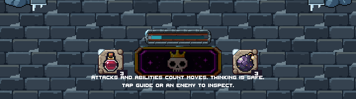
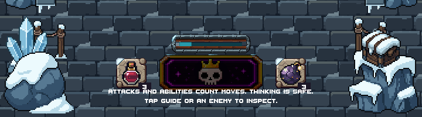
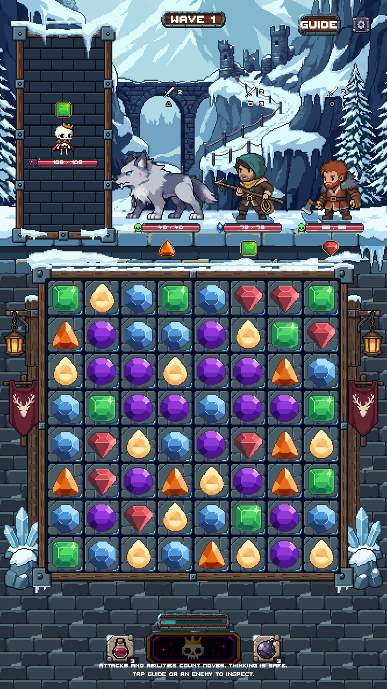
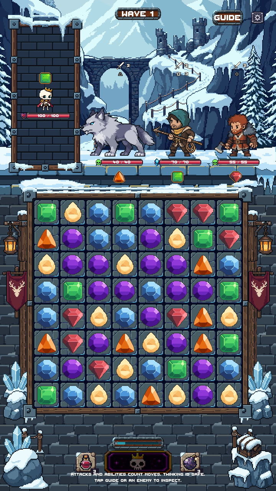
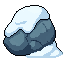
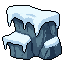
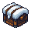

Snowy Mountain · Stage 7
Snow-covered stone corners, blue ice, rope posts and a small supply crate around the existing lower HUD. Review candidate — not production-integrated or merged.
Approved backdrop, portrait, snow ledge, board and Stage 6 side dressing are unchanged. Shared controls and text remain on top. 21 PixelLab generations used; 4,889 remain.
Bottom region — actual Unity captures
Before · accepted Stage 6

After · Stage 7

Full Game-scene comparison
Before

After

These are actual Unity Editor Game captures with temporary staged artwork. The existing 360×640 crowding/camera warning and tall-safe-area backing remain visible in both versions. At 360×640 the controls cover part of the lower scenery. No phone build or device test is claimed.
Native modular artwork
Original PixelLab geometry preserved; coloring consolidated in LibreSprite. Ice and rope posts reuse approved Stage 6 assets exactly. No scaling of source artwork.
LowerIce
39×54 · 14 opaque colors · binary alpha
Raw source at 1×

Cleaned at 1×

Cleaned at 3×
LibreSprite source · PNG
LowerRock_Left
62×55 · 7 opaque colors · binary alpha
Raw source at 1×

Cleaned at 1×

Cleaned at 3×
LibreSprite source · PNG
LowerRock_Right
62×57 · 8 opaque colors · binary alpha
Raw source at 1×

Cleaned at 1×

Cleaned at 3×
LibreSprite source · PNG
SupplyCrate
36×35 · 12 opaque colors · binary alpha
Raw source at 1×

Cleaned at 1×

Cleaned at 3×
LibreSprite source · PNG
Validation
Unity compilation and the five-viewport preview test passed. Paired screenshots retain the protected regions exactly; all 9,253 protected files are unchanged. Native exports have binary alpha, complete silhouettes and exact LibreSprite round trips.
Validation · Unity test result · Generation ledger · Native manifest · Handoff notes
Target and source records
Target is composition guidance; supplied images were not uploaded to PixelLab.

First kit receipt (rejected for size) · Rock candidates receipt · Crate receipt
Stopped after Stage 7 for visual approval. Stage 8 has not started. Draft PR #218